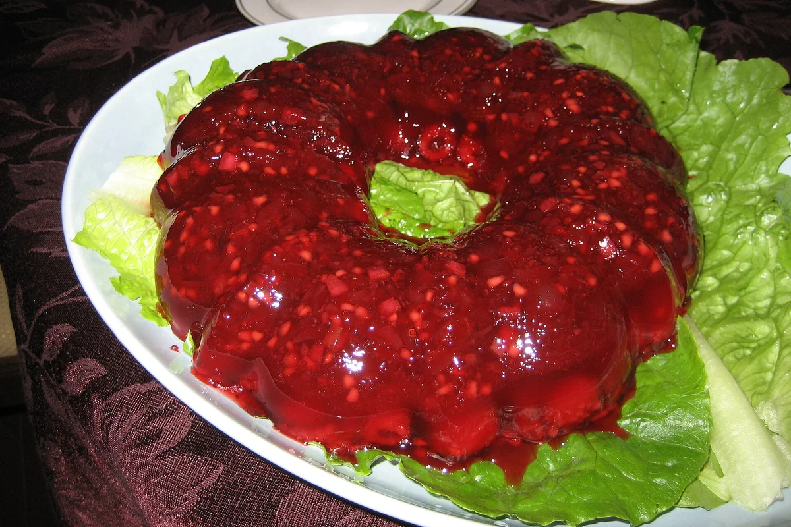
When Jell-O Was a Salad and Dinner Came in a Tray
A wobbling mold, a little foil compartment, a cake turned upside down. Which of these dishes takes you straight back to your family's table?
Read the storyWHAT WERE WE THINKING? - HAIR - 1960s-80s
Hairspray, curlers, a bowl and a very steady hand. Which hairdo was yours, or your mother's, or your brother's?
Hair was an event. It took time, tools and a lot of confidence. The 1960s gave us the beehive and the mop top. The 70s gave us feathers. The 1980s, according to Wikipedia's list, brought the mullet, tall mohawks, Jheri curls and flattops, and among women large, puffed-up styles and permanent waves.
Here are twelve hairdos. Be kind. They all felt right at the time.
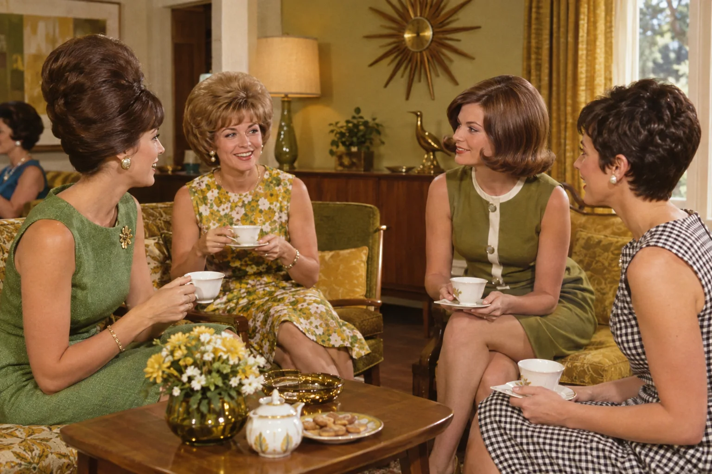
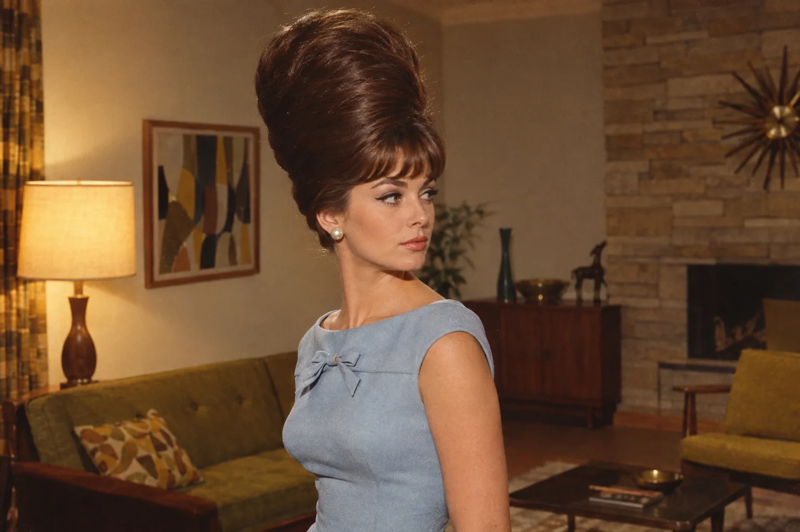
Stacked up high and held with spray, the beehive is credited to Margaret Vinci Heldt in 1960, in one retrospective. It is tied in the story to the invention of modern hairspray. Some of us slept sitting up to keep one.
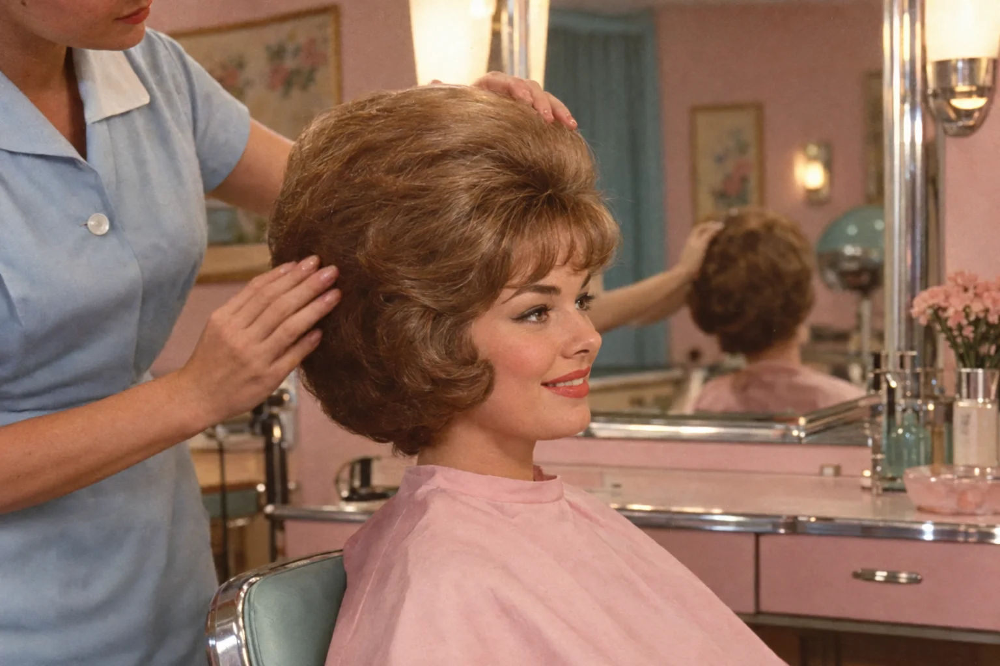
Backcombed for height and smoothed on top. Bouffants of the 1950s were built by backcombing, as one history notes. A bouffant also gave a woman a presence in a doorway.
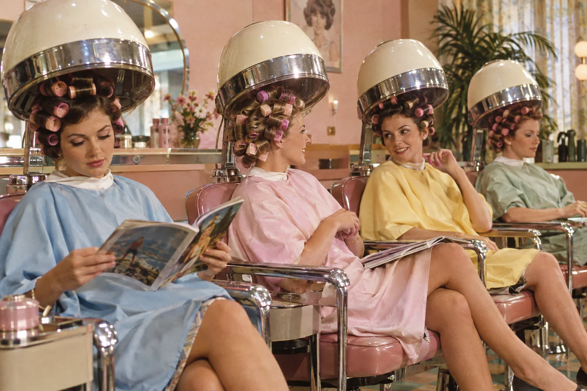
Pink foam curlers, plastic pins and a bonnet. The salon hood dryer was a place for a good long talk. You came out as a different person, with a head that did not move.
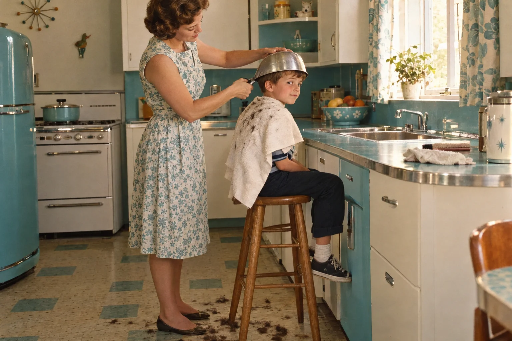
The bowl cut was simple, and it was cheap. Dictionary.com says it returned in the 1960s with British rock groups, and was called a mop-top. At home it often needed a bowl and a pair of kitchen scissors, and a steady hand.
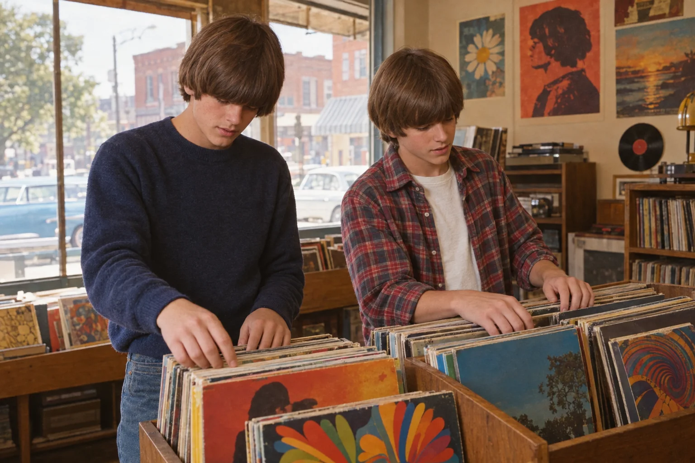
Long on the forehead and over the ears. It was shocking in 1964, and ordinary by 1969. Fathers said something about it at the dinner table.
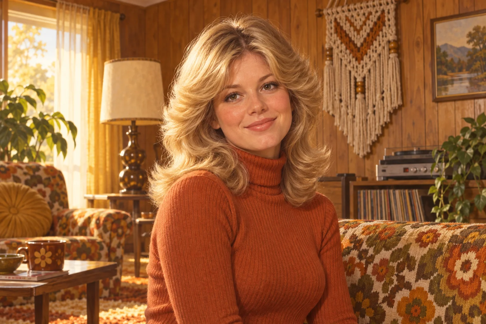
A 1976 poster of Farrah Fawcett with her feathered blonde hair is called the best-selling poster of all time by the Smithsonian. Wikipedia counts more than twelve million copies. Millions of us went to a salon with a picture.
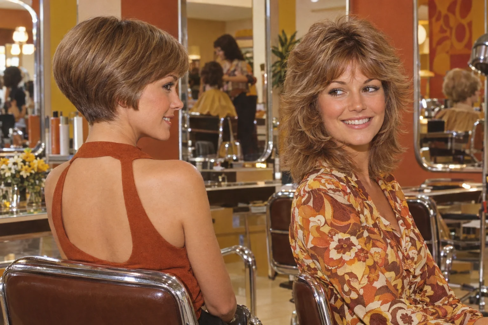
Short, layered and a little messy. It was supposed to look effortless, and took a good deal of effort. Many women of the decade had one, and a mirror to prove it.
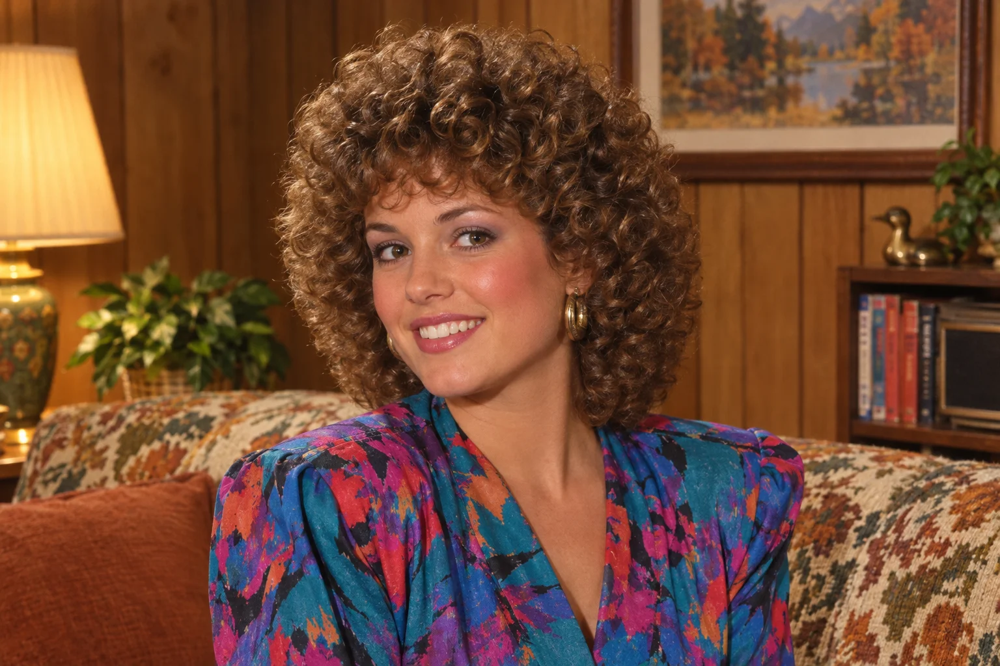
A smell you remember, a head of tight curls and a kitchen full of rollers. Wikipedia lists permanent waves among typical women's styles of the 1980s. Some of us went in with straight hair, and left with a sheep.
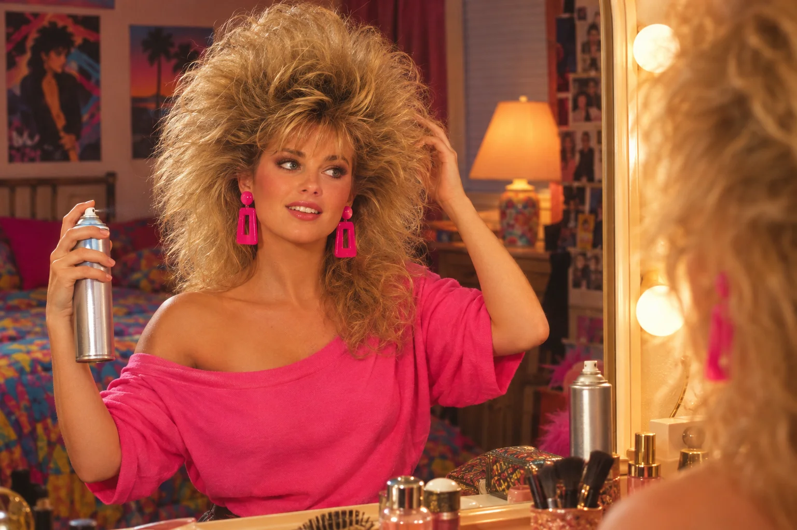
Taller, wider and held up by a can of spray. The more volume the better, as the 1980s saw it. A hat had to be chosen carefully.
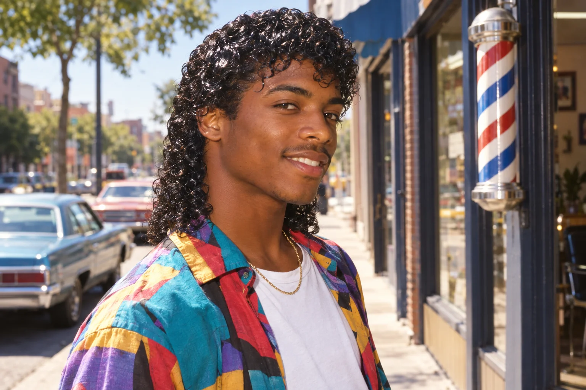
Wikipedia lists the Jheri curl among 1980s hairstyles. It was a wet, glossy curl, and a pillow was protected with a plastic cap. The couch might have been covered, too.
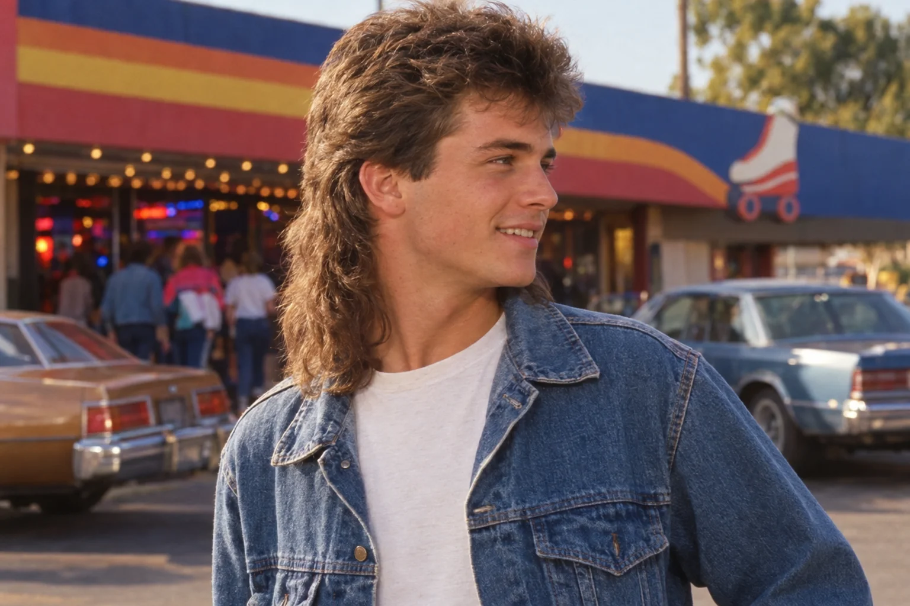
Business in the front, party in the back. The mullet is on Wikipedia's list of the 1980s hairstyles. It was, in its way, a statement on both ends.
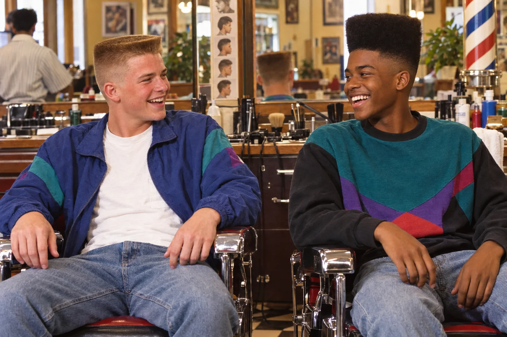
Flattops and hi-top fades are in the same 1980s list. Cut level with a steady hand and a good barber. They stood up on their own.
So how many were in your home? The beehive on a mother, the bowl cut on a child, the mullet on an uncle, and a perm on you. Everyone had a hairdo, and everyone had a photo to prove it.
Which was the worst? Talk it over with someone who lived it, and share who in your family had the most outrageous hair.
All images in this article are AI-generated illustrations inspired by the period, not historical photographs.

A wobbling mold, a little foil compartment, a cake turned upside down. Which of these dishes takes you straight back to your family's table?
Read the story
Remember the rotary phone? The long cord, the slow dial, the one phone in the house. A warm look back, with a question for you.
Read the story
10 questions about familiar objects. No timer.
AI-created period illustration
Take the quiz← Back to Dear Old Days · All articles · About · Privacy policy · Photo credits